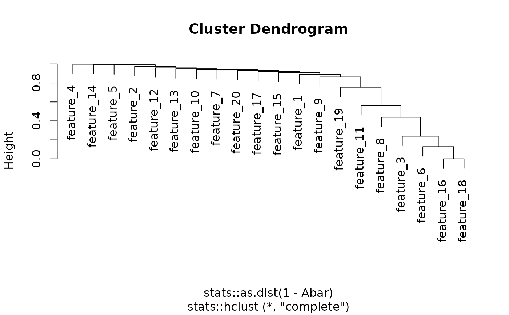

Prunes Subnetwork and Return Final Pruned Subnetwork Module
Source:R/SmCCNet-source.R
networkPruning.RdPrunes subnetworks with network pruning algorithm (see multi-omics vignette for detail), and save the final pruned subnetwork to the user-defined directory. The final subnetwork is an .Rdata file with a name 'size_m_net_ind.Rdata', where \(m\) is the final pruned network size, and ind is the index of the subnetwork module after hierarchical clustering.
Usage
networkPruning(
Abar,
CorrMatrix,
data,
Pheno,
type,
ModuleIdx,
min_mod_size = 10,
max_mod_size,
damping = 0.9,
method = "NetSHy",
saving_dir
)Arguments
- Abar
Adjacency matrix of subnetwork with size \(m^{*}\) by \(m^{*}\) after hierarchical clustering.
- CorrMatrix
The correlation matrix of features in
Abar, it should be \(m^{*}\) by \(m^{*}\) as well.- data
The omics data for the subnetwork.
- Pheno
The trait (phenotype) data used for network pruning.
- type
A vector with length equal to total number of features in the adjacency matrix indicating the type of data for each feature. For instance, for a subnetwork with 2 genes and a protein, the
typeargument should be set toc('gene', 'gene', 'protein'), see multi-omics vignette for more information.- ModuleIdx
The index of the network module that summarization score is intended to be stored, this is used for naming the subnetwork file in user-defined directory.
- min_mod_size
The minimally possible subnetwork size for the pruned network module, should be an integer from 1 to the largest possible size of the subnetwork, default is set to 10.
- max_mod_size
the maximally possible subnetwork size for the pruned network module, should be an integer from 1 to the largest possible size of the subnetwork, and it needs to be greater than the value specified in
min_mod_size.- damping
damping parameter for the PageRank algorithm, default is set to 0.9, see
igraphpackage for more detail.- method
Selection between NetSHy' and 'PCA', specifying the network summarization method used for network pruning, default is set to NetSHy.
- saving_dir
User-defined directory to store pruned subnetwork.
Value
A file stored in the user-defined directory, which contains the following: (1) correlation_sub: correlation matrix for the subnetwork. (2) M: adjacency matrix for the subnetwork. (3) omics_corelation_data: individual molecular feature correlation with phenotype. (4) pc_correlation: first 3 PCs correlation with phenotype. (5) pc_loading: principal component loadings. (6) pca_x1_score: principal component score and phenotype data. (7) mod_size: number of molecular features in the subnetwork. (8) sub_type: type of feature for each molecular features.
Examples
library(SmCCNet)
set.seed(123)
w <- rnorm(20)
w <- w/sqrt(sum(w^2))
labels <- paste0('feature_', 1:20)
abar <- getAbar(w, FeatureLabel = labels)
modules <- getOmicsModules(abar, CutHeight = 0.1)

x <- X1[ ,seq_len(20)]
corr <- stats::cor(x)
# display only example
# networkPruning(abar, corr, data = x, Pheno = Y,
# ModuleIdx = 1, min_mod_size = 3, max_mod_size = 10, method = 'NetSHy', saving_dir =
# )